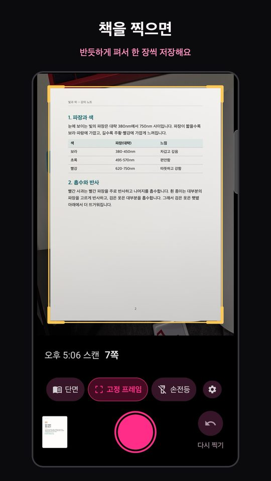
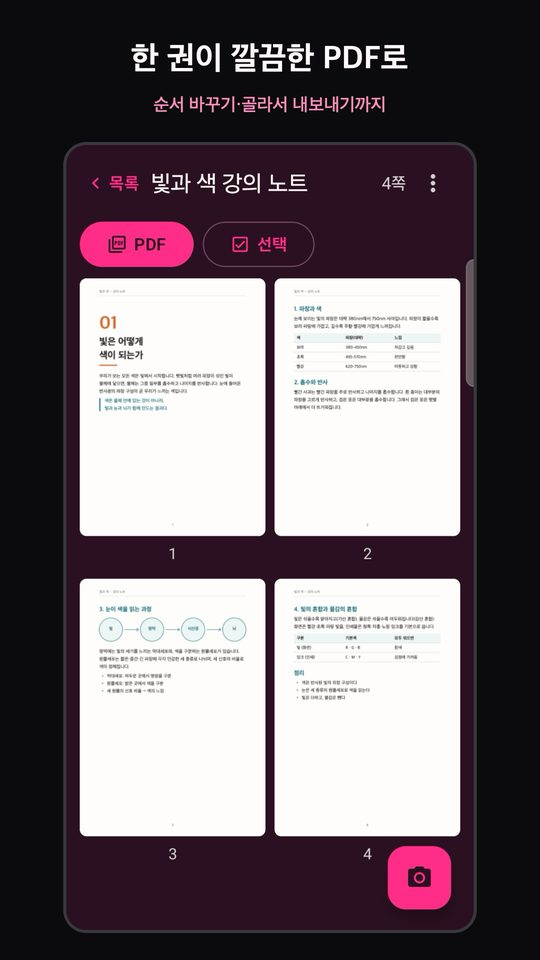
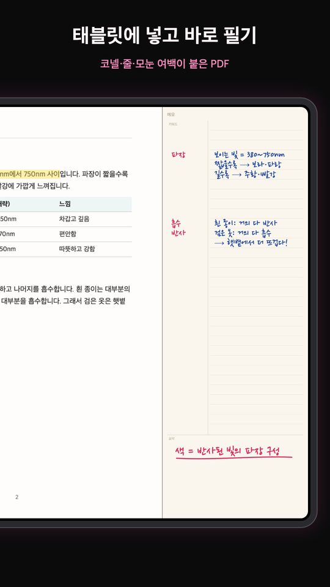
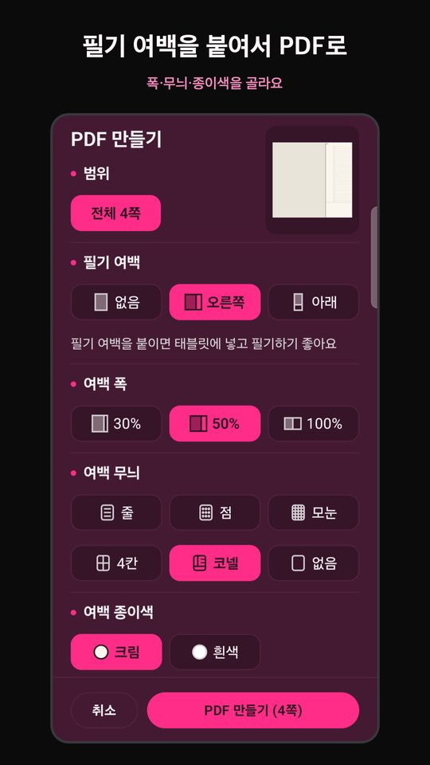
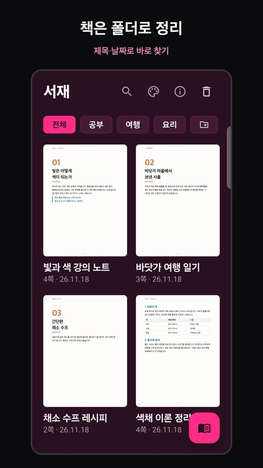

옆으로 넘겨 보세요 →
이런 걸 해 줍니다
- 휜 종이도 반듯하게비스듬히 찍거나 책 가운데가 휘어도 정면에서 본 것처럼 폅니다.
- 스캐너처럼 선명하게그림자와 누런 종이색은 지우고, 연한 색 글씨는 살립니다.
- 양쪽 페이지 자동 분리펼친 책을 한 번에 찍으면 왼쪽·오른쪽 쪽으로 나눕니다.
- 필기 여백 PDF줄·점·모눈·코넬 칸을 붙여 태블릿에서 바로 풀고 적습니다.
- 공부 흔적 지우기형광펜과 밑줄을 지운 쪽을 만들고, 원본도 따로 남깁니다.
- 내 책은 내 폰에만회원 가입도 서버 업로드도 없이 폰 안에서 처리합니다.
참여 방법
신청서 없이 바로 참여할 수 있습니다. Play 스토어에 로그인된 같은 구글 계정으로 아래 순서대로 눌러 주세요.
- 1테스터 그룹에 가입열린 페이지에서 "그룹 가입"을 누릅니다. 버튼이 안 보이면 오른쪽 위에서 구글 로그인을 먼저 해 주세요. 테스터 그룹 가입하기 →
- 2테스터 되기가입한 뒤 열린 페이지에서 "테스터 되기"를 누릅니다. 가입 직후에는 몇 분 걸릴 수 있습니다. 테스터 되기 →
- 3Play 스토어에서 설치같은 페이지의 "Google Play에서 다운로드"를 누르거나, 스토어에서 "한장한장"을 찾아 설치합니다. 업데이트는 자동입니다. Play 스토어에서 열기 →
꼭 부탁드립니다. 구글 정책상 테스터가 14일 동안 참여해야 정식 출시를 신청할 수 있습니다. 2주 동안은 앱을 지우거나 테스트 참여를 해제하지 말아 주세요. 써 보신 뒤 5분 설문에 답해 주시면 큰 도움이 됩니다. 오류 화면 캡처는 shlee4ever@gmail.com으로 보내 주세요.
안드로이드 8.0 이상 휴대폰에서 쓸 수 있습니다. 아이폰판은 준비 중입니다.
그룹에 가입하거나 이메일로 신청하시면 개발자에게 구글 계정 이메일이 보입니다. 테스터 등록과 테스트 안내 외에는 쓰지 않으며, 정식 출시 후 1개월 안에 그룹과 신청 메일을 정리합니다.